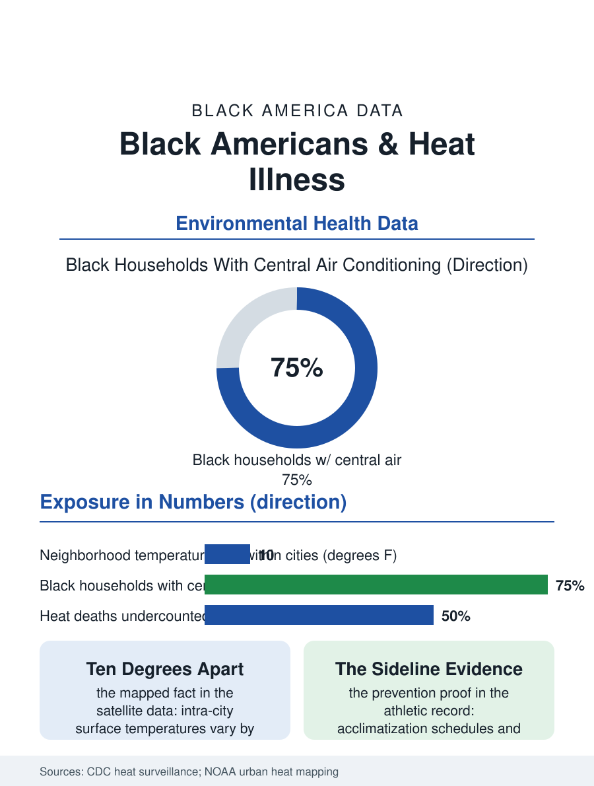

Black Public Health
Ten Degrees Apart: Black Americans and Heat
The hottest neighborhoods in American cities are the ones drawn for Black residence, and heat is becoming a health statistic with a map. The heat file.

Heat is the deadliest weather in America, and its burden is being redistributed by the climate data onto the bodies least equipped to bear it. Black Americans die of heat-related causes at higher rates than the national figure, work the outdoor jobs where exposure concentrates, and live in the urban neighborhoods whose temperatures run measurably hottest. As the heat seasons lengthen, this article reads the heat file, where the thermometer has become a health statistic.
The Hot Neighborhood Is a Mapped Fact
Satellite temperature mapping has made the file's foundational fact undeniable in the literal sense: within the same city on the same afternoon, surface temperatures vary by ten degrees or more between neighborhoods, and the hot ones are the ones the housing file predicts, the districts of dense pavement, industrial zoning, and thin tree canopy that were, in city after city, the districts drawn for Black residence by the twentieth century's housing policies. The tree canopy data complete the mechanism: canopy cover in the formerly redlined districts measures at fractions of the leafy suburbs', and canopy is infrastructure, shade being the difference between a bus stop that is an inconvenience and one that is a medical event for the elder waiting at it. Air conditioning access writes the indoor half: the energy surveys find Black households less likely to have central air, more likely to ration the window unit against the electric bill, the energy burden file's arithmetic made physiological, and the public housing stock, where cooling standards lag heating standards in most jurisdictions' codes, concentrating elderly Black residents in the buildings the heat wave autopsies keep naming. The heat death certificates undercount, as the epidemiology literature establishes, because heat kills through the heart and kidneys it stresses, filed under the chronic disease it aggravated.
The Working Body in the Heat
Occupational heat exposure concentrates in the employment files' outdoor tiers: agriculture, construction, landscaping, delivery, and the warehouse interiors whose temperatures the ventilation data describe, workforces in which Black workers are heavily represented and in which the wage structure, piece rates in the fields, route quotas in the trucks, pays for pace precisely when physiology demands rest. The federal regulatory record on heat is a file of proposals: a specific occupational heat standard has been in rulemaking for years, with water, rest, and shade requirements that a handful of states have already enacted in their own codes, while the states where Black outdoor workers concentrate have, in notable cases, moved the other way, preempting local heat protections. The athletic field adds the youth chapter: high school football's heat deaths, disproportionately Black teenagers in the southern data, produced the state-level practice rules, acclimatization schedules, cold tubs on sidelines, that now stand as the file's clearest proof that protocols prevent what physiology predicts. Military training, with its own heat discipline built over a century, supplies the grim benchmark of what organized prevention achieves at scale.
Adaptation Is a Health Intervention
The adaptation file divides into the body's defenses and the city's. The clinical side is thin but real: the chronic disease population's heat vulnerability is manageable, medication reviews for the drugs that impair thermoregulation, hydration planning, the visiting nurse's summer check, and the cooling center network whose effectiveness the evaluations tie to the unglamorous variables of distance, hours, and whether the elder trusts the building. The city side is where the data promise transformation on a generational clock: tree planting targeted by the temperature maps rather than by the request queue, cool roof and pavement programs, shade at transit stops, and building codes that treat cooling as the life-safety system heating already is. The workforce protections remain the file's most contested square footage, because they price the exposure directly, rest breaks denominated in the employer's minutes. The heat file closes with its trend line, the one figure no one disputes: the hot days are multiplying fastest in the regions where Black America lives, the South and the urban North alike, so the file's variables, canopy, cooling, work rules, will decide whether the century's defining environmental exposure becomes one more column in the disparity tables or the rare one the society saw coming in time. The satellite maps already show every official exactly where to plant. The file regards that as the hopeful version of the story, and the planting schedules as the measure of whether anyone believed it.
More in Black Public Health
Hypertension Among Black Adults: Prevalence, Control, and Consequences
About 55 percent of Black adults have hypertension — the highest rate of any U.S. group. Prevalence, onset, control, and the stroke, heart, and kidney consequences in the data.
Diabetes Among Black Adults: Prevalence and Complications
Nearly one in five Black adults has diabetes, diagnosed or undiagnosed — and its complications fall with particular weight. The CDC data on prevalence, control, and outcomes.
Black Life Expectancy: The Gap at Birth and Its Causes
Black life expectancy at birth is about 73 years, roughly five years below the national figure — the summary measure of every health gap in this section. The CDC data.
Source: Centers for Disease Control and Prevention heat-related illness surveillance; NOAA and university urban heat island mapping studies; occupational safety data.